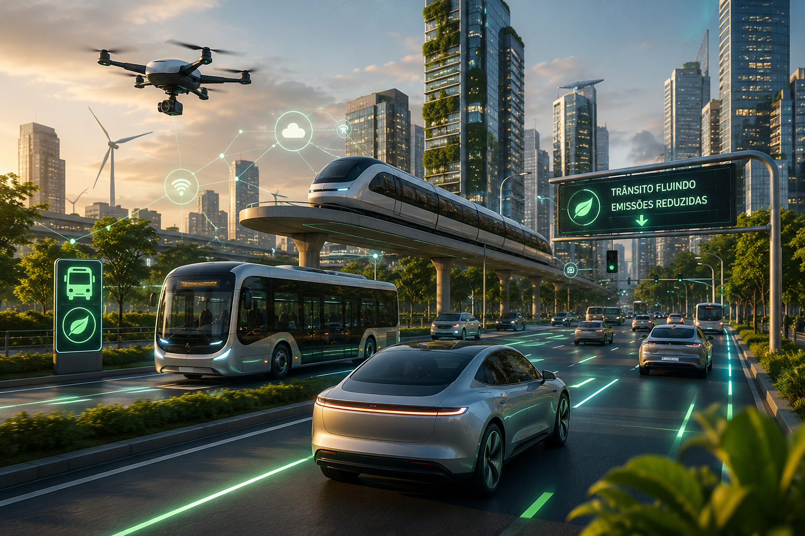

Veículos conectados, automação e logística inteligente tornam o transporte mais eficiente.
O transporte inteligente utiliza tecnologias digitais, inteligência artificial, sensores e sistemas de monitoramento para tornar a mobilidade mais segura, rápida e sustentável. Essas soluções ajudam a reduzir congestionamentos, otimizar rotas e diminuir o consumo de combustível, beneficiando pessoas, empresas e o meio ambiente.
Automóveis equipados com sensores e sistemas de assistência que aumentam a segurança e melhoram a experiência de condução.
Monitoramento em tempo real para otimizar rotas, reduzir atrasos e melhorar a logística de transporte.
Sistemas automatizados que controlam o fluxo de veículos, diminuindo congestionamentos e aumentando a fluidez do trânsito.
Redução no tempo das viagens
Eficiência na logística
Emissão de poluentes